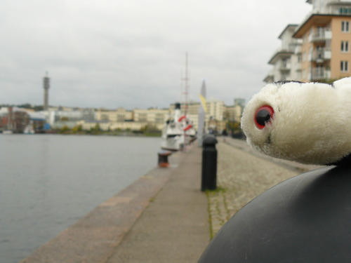
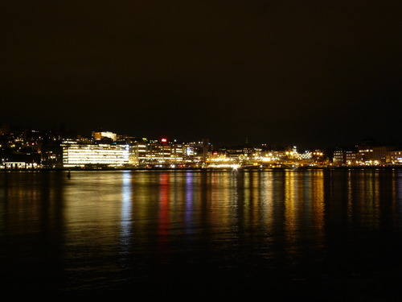
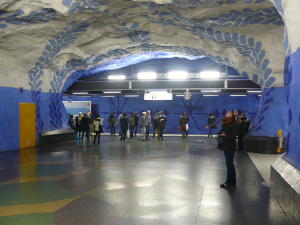
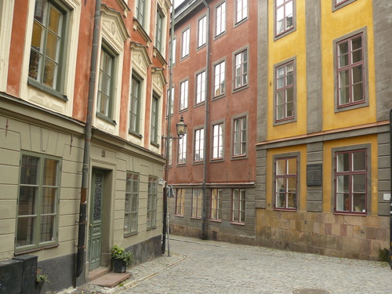
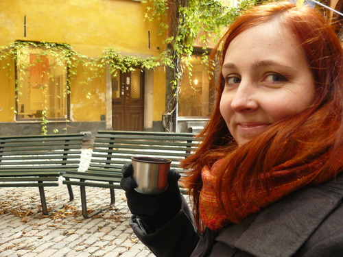

October 2014
Bakešovic svatba (po slovensky svadba)
Do naší pražínské schránky přistála pozvánka na svatbu Bakiho a Denisy, takže jsme neváhali a den po Žánkově návratu se Stockholmu jsme vyrazili na cesty. CK Maky nás naštěstí bez kalamit dopravila do Košic a ubytovali jsme se v hotýlku Stadion.
V sobotu dopoledne jsme přijeli k Majerčákům domů, kde jsme vyzvedli nevěstu, ženicha a fotografa Jardu. Měli jsme totiž za úkol asistovat při fotosession v parku - občas jsme při focení něco přidrželi a hlavně jsme se snažili udržovat veselou náladu. Já osobně bych jako modelka hodinové focení asi nevydržela, ale Bakešům to šlo skvěle. :)
Po focení jsme u Majerčáků cinkli první štamprdli, něco málo pojedli a pomalu byl čas vyrazit ke kostelu. Potkali jsme cestou jiný novomanželský pár, ale Baki vyhodnotil, že má hezčí nevěstu. :) Před kostelem se k nám rozvážným tempem až z Tater přišoural Péťa Krásný, který řešil vtipný problém s rozpadlou botou. Lepidlo naštěstí zachránilo situaci! Ve dvě hodiny jsme podle instrukcí vytvořili “špalír” a obřad mohl začít…
Poté, co jsme zamáčkli slzu za novomanžele, nahnali nás na společné focení a do autobusu směřujícího na hostinu. Tu zahajoval Žánek svým proslovem, pěkně od srdíčka to pověděl a snad se to všem líbilo, po něm Tinka (Denisy sestra) ve svém přípitku shrnula, jak se sympaťák Martin postupně vetřel do rodiny. Zase jsme zamáčkli slzu a pak už jsme se veselili u hostiny.
Cimbálovku po čase vystřídal DJ se skvělou vlastností netrefit se do vkusu svatebčanů a mixovat nemixovatelné, ale ani to nás od reje na parketech neodradilo. V jeden okamžik se fakt nenápadně vytratila většina mužů, když přišel na řadu únos nevěsty. Tu asi po půl hodině ženich úspěšně objevil na Plese upírů a přivedl ji pěkně zpět na začepčení a půlnoční redový tanec.
Dobře jsme se bavili i nadále, a tak nám ani moc nevadilo, že kdesi v koutě zůstal zcela zapomenut svatební dort. Co se s ním nakonec stalo, to netušíme, pravědpodobně ho snědli. A nebo to byla jen atrapa…?
Každopádně, byla to krásná akce a jsme moc rádi, že jsme se jí mohli osobně zúčastnit.
Kochání ve Stockholmu
Poslední den Zuzejkovy návštěvy jsme konečně po cestě “metrem” do města vystoupili u Globenu, což jsme už nějakou dobu plánovali. Globen je úplně obyčejná hokejová hala, akorát je trochu kulatá.

Následně jsme vystoupili na jihu jižního ostrova, abychom si jej prošli. Nedbaje průvodců, našli jsme spoustu hezkých zákoutí a kostelů.

Došli jsme až k průlivu (průplavu?), kde se nám otevřely nové výhledy. Vyvenčili jsme BSE a pak jsme šli k přístavu, kde jsem před lety vystupoval z finského trajektu po cestě z Erasmu do ČR.


Nad přístavem je pěkná vyhlídka, tak jsme na ni vylezli.

Pak jsme putovali po pobřeží a užívali si výhledy, historické uličky, apod. a zamilovávali jsme se do Stockholmu víc a víc.


Naše putování vyvrcholilo návštěvou upovídané a přátelské kavárny, koukáním na Thorův zadek a zasněním se u vyhlídky na centrum města, kde jsme byli za deště první den našeho výletu.
Po známých cestách jsme došli k místu, odkud jezdí MHD přívoz na Djurgården a svezli se při rozsvěcujícím se Stockholmu tam a zpátky. V dobrém rozmaru jsme pak procházeli nejcentrálnější centrum města plné historických domečků - tentokrát ale už křížem krážem tak, jak se nám chtělo, ne podle průvodců. Pospojovali a prošli jsme si všechny uličky, navštívili známá místa a kochali se tichou večerní atmosférou města, ve kterém takhle v neděli večer nikdo nebyl.

Nakonec jsme se ještě rozhodli dojít na radnici, ale nějak se nám to prodloužilo, protože jsme se nemohli přestat kochat. Krásně osvětlená Birgit Nilssons allé (alej) nás zavedla až k hlavnímu náměstí moderního Stockholmu, na Sergels Torg.
Po nějakém tom kochání se “jídlem” v Burger Kingu jsme konečně vyrazili směr radnice. I tam jsme našli další nové věci, kterých jsme si předtím nevšimli, takže jsme se zase kochali a kochali…
Poslední pohledy na noční Stockholm, hledání secesního veřejného záchodku, na metro a konec. Zuzejk ráno odlítá do Prahy, já zůstávám ještě tři dny na konferenci.

Vasa a Djurgården
Na sobotu jsme si připravili návštěvu Vasa muzea s tím, že se pak uvidí, co bude potom. K muzeu Vasa jsme se přepravili loďkou, která je součástí MHD.

Vasa je nádherná obrovská plachetnice, kterou postavili v 17. století pro krále. Postavili ji ale blbě, tak se jim po kilometru jízdy potopila a už se jim nepovedlo ji vytáhnout.


Na začátku 60. let ji našli, vyzvedli, prostudovali, pokusili se ji zakonzervovat a pak ji po několika letech šoupli do muzea. To je teď nejnavštěvovanější švédské muzeum, takže pokud jste byli ve Švédsku, je velká pravděpodobnost, že Vasu jste už viděli.

Až jsme se nabažili Vasy… shodou okolností ve chvíli, kdy zavírali muzeum… tak jsem si řekli, že se projdem po Djurgårdenu, což je takový pěkný královský park za rohem. Sice už bylo šero a samozřejmě podzim, ale i tak to byla fajn procházka.

Po setmění jsme došli k pobřeží, kde na nás zase čekal moc pěkně osvětlený Stockholm.


Nakonec jsme toho docela dost nachodili a byli jsme rádi, že jsme chytli poblíž Waldemar-Matuška-huset nějakou vlakotramvaj do města. Jenže se nám pak ještě nechělo domů, tak jsme se jali projet ještě nějaký ten “metro art” - na zastávku tuším s technickou univerzitou a na zastávku, kde je olympijský stadion.


Druhá půlka druhého dne ve Stockholmu
Zuzejkovi došla spisovatelská slina, tak že prý to mám dorazit já. Dopoledne jsme tedy prošli historické centrum a přilehlý rytířský ostrůvek, teď nás čekala radnice. Než se o ní ale rozepíšu, musím vám vysvětlit následující fotku:

Jsme se totiž rozhodli, že když je mezi páry teď v kurzu vozit s sebou na cesty nějakého maskota a fotit ho na různých místech, že to zkusíme taky. Jenže jsme doma našli jenom plyšovou zvětšeninu nemoci šílených krav, tedy BSE. Protože je BSE asi tak fotogenická jako my dva, a dost podobně se jí dařilo aranžovat do atraktivních pozic, byla to nakonec možná dobrá volba. Takže to v tom růzovém vřesu je BSE, ne chlupatý robertek s očima.
Teď už ale šupem na radnici. Byla naprosto famózní. Ani jsme nedýchali, jak to tam bylo boží… (Samozřejmě jsme se nadechli, abychom přežili, ale až po několika sekundách!)
Abych tady dal i nějakou svoji fotku…

Radnice byla nádherná, ale její fotky si určitě najdete na Gůglu, takže vás tady s nima nebudem otravovat. Vyrazili jsme pak do víru velkoměsta a procházeli Normalm, bijící srdce Stockholmu plné obchodů, kanclů, sídel, atd., prostě asi takový Manhattan nebo Václavák nebo tak něco. Našli jsme tam super kavárnu, hezky vyzdobenou, a zdrželi se tam na pár kafíček a čokoládovou kokosovou kouli.

To už se začalo stmívat. Dva zážitky zde na hlavním náměstí - dva netradiční hudebníci a spontánně se připojivší milá švédská dívka, která nás chtěla vyfotit a když jsme jí to rozmlouvali, tak že prý se máme vyfotit s ní, ať máme památku :-)

Nakonec jsme za tmy prošli ještě pár ostrůvků směrem k jezeru, z nichž je pěkný výhled na královský palác a staré město.


Zpátky jsme jeli autobusem a metrem. Metro bylo na T-Centralen skvěle vyzdobeno. Taková blbost - nahrubo vysekaná skála natřená barvou - a tak efektní věc. Nu považte sami!

A to je dnes vše. Dem se koukat na nějaký švédský film!
Dneska jsme byli za největší turisty a chodili po největších atrakcích, fotili se a dělali si srandu z toho, co vidíme. Uvidíme, co vymyslíme na zítra. Pár postřehů:
- Švédi jsou družní a vypadají velmi dobrosrdečně.
- V hradní stráži mají osoby všech postav, pohlaví, barev. Viz fotka v minulém díle.
- Stockholm, to je prostě voda, zeleň a cihličky!
- Řidiči jsou tu strašně ohleduplní, zato cyklisti jsou trochu piráti. Piráti cyklostezek - těch je tady všude nespočet.
- Všude to voní nějakým sladkým nebo pečivem nebo stromem, já nevím. Ale nikde se mi nezdálo, že by něco smrdělo, třeba močí. Ani na nějakém hnusném místě.
- Nikde jsem ještě neviděl terminál na bezkontaktní platební karty. Zato ale platba trvá okamžitě. U nás je vždy jakási divná prodleva, tady se to prostě sejme v milisekundě. To samý jako kdysi ve Finsku.
- Přímo uprostřed Stockholmu jsou rybáři (po setmění se jich vyrojilo fakt hodně) a loví tam ryby, klidně hned u parlamentu nebo u paláce. Jezero ve městě je tak čisté, že tam toho prý docela dost nachytají.
- Alkohol je tu dost omezovaný, ale sehnali jsme dvě plechovky piva. Plechovky jsou mimochodem zálohované. Teď zkusíme vypít nějaké 0.3l extra strong, tak pokud zítra nebude zápisek, sejmulo nás to!
Dobrou noc!
Stockholm historický i moderní
Protože mělo dnes vyjít příznivé počasí, rozhodli jsme se toho co nejvíce nachodit po historickém centru Stockholmu a vydali jsme se metrem rovnou na Gamla Stan. Místní uličky jsou opravdu kouzelné…

a náměstíčka stejně tak.

Kochali jsme se na každém kroku. Zde s místní námořnicko-hudební celebritou.
Podařilo se nám sejít z trasy navržené v kapesním průvodci a díky tomu jsme neplánovaně vychytali střídání stráží před královským palácem. Zaujaly nás netradiční návleky na boty a pestrý výběr gardistů.

V Gamla Stanu před Obeliskem jsme objevili taky srandovní mini dodávku… “My shoe is bigger then this car”
Honza nostalgicky pokukoval po okolí finského kostelíku, kde mimo jiné byla ukryta nejmenší stockholmská socha.

Hledání tohoto náměstíčka nám dalo asi nejvíc práce, ale výsledek nakonec stál za to. Teplý čaj z termosky přišel vhod.

Po polední pauze v Kebab Jeruzalém jsme zabloudili na sousední menší (rytířský) ostrůvek s neméně zajímavými památkami. Jako tento kostel s dostavěnou neogotickou střechou.

Potom jsme ušli sotva pár krooků a dýchla na nás zase moderní doba…


První den ve Stockholmu
Vstali jsme, odletěli do Stockholmu a zjistili jsme, že jsme doma zapomněli chleba. Ubytovaní jsme přes Airbnb a pan domácí musel být v práci až do pěti, tak jsme potřebovali něčím vyplnit odpoledne.
Zkusili jsme tedy hledat ten chleba. Zjistili jsme, že na hlavní nákupní třídě, u budovy parlamentu, ve starém městě, ani v McDonald’s chleba nemají. V mekáči jsme si ale objednali k našim výletním řízkům dvakrát velké hranolky a oběd byl hotov. Zapomněli sice na okurku, ale nevadilo nám to.
Abyste se taky něco dověděli, tak Stockholm leží na ostrovech mezi velkým jezerem (na mapě na západě, tzn. vlevo) a mořem (vpravo). Mezi nima je stavidlo nebo tak něco, ale vůbec to tam není hezký, protože tam nad tím vybudovali velký dopravní uzel ze severu na jih a naopak, kde jezdí vlaky a metro a spousta aut. A protože už je to dlouho, co to vybudovali, má to nádech trochu jako podchod karvinského nádraží nebo tunel z Žižkova na Karlín. To jen abyste si nemysleli, že ve Švédsku je všechno jenom super a hezký. Našli jsme hned jednu věc, která je tu úplně nejvíc ošklivá!

Ale celý zbytek Stockholmu je moc hezký. Moje osobní postřehy:
- mají tady taky koruny a ceny jsou skoro stejné jako u nás, akorát že jejich koruna jsou tři naše - jak poznamenala Zuzka, to bude asi proto, že mají Švédi ve znaku tři korunky
- mají tady coop a lídl a v nich mají na váhu v ledničce krevety (Buba by měl radost) a lososy
- losos není oranžový - má lososovou barvu
- všude jsou kola a cyklostezky, ačkoliv zrovna ten jižní ostrov není moc placatý - místní na to ale pečou a prostě si to šlapou všude na těch nejvíc nejstarších bicyklech, ať už jedou kamkoliv a v jakémkoliv oblečení
- všechno je uklizeno a uspořádano a pěkně posekáno a je tu čisto… teda až na místa, kde čisto není, ale těch moc není
- sprejeři jsou tady snad jediný okem viditelný pořádný nešvar, ale v centru ne
- je tu milion jeřábů a všude se něco nového staví a opravuje se
Vymysleli jsme, že se projdeme po jižním ostrově (Södermalm) a koukneme na Stockholm z vyhlídek.

Přestože všechny předpovědi hlásily déšť, začalo znenadání pršet. Tato pohroma nás zastihla především kolem Mariatorget, kde byla kašna s Thorem bojujícím s nestvůrami. Jelikož měl vypracovaný zadek, chtěla se Zuzka pozdržet déle, ale déšť byl příliš silný a toto nově vybudované pouto brzy přetrhl.


Z očividných důvodů máme taky na polovině fotek nějaké kapky a jsou tak různě rozmazané, ale Thor to vem, aspoň je to autentický.


Po vycházkách jsme se jeli ubytovat a zjistili jsme, že se nám nedaří komunikovat s týpkem, u kterého bydlíme. Nakonec jsem u obchůdku, který měl free wifi (obchůdek asi jako Žabka nebo Brněnka) připojil tablet a zjistil jsem, že jsem si blbě opsal jeho telefonní číslo. Pak už jsme se nějak domluvili a připraveni jsme byli vlastně dobře, protože jsme byt našli úplně sami. Týpek byl celkem OK, docela vtipné povahy, očividně na nás moc připravený nebyl a nestíhal, ale my nejsme moc nároční, tak je nám tu vlastně dobře.
Pak jsem akorát musel hacknout router, abych zjistil heslo na wifi, jelikož to, co jsme dostali vůbec nefungovalo, ale tím dnešní dobrodružství nejspíš končí a zítra hurá objevovat a fotit a hlavně nenosit na zádech mega baťoh a nekličkovat mezi kapkama deště :-P
Startujem!
Dneska má svátek Havel, tak sedíme na jeho letišti a míříme směr Stockholm. Prý tam má být zima a sem tam má pršet, ale stejně věříme, že to tam bude vypadat přesně takhle:

Takže hurá do letadla a pak se zas ozvem!